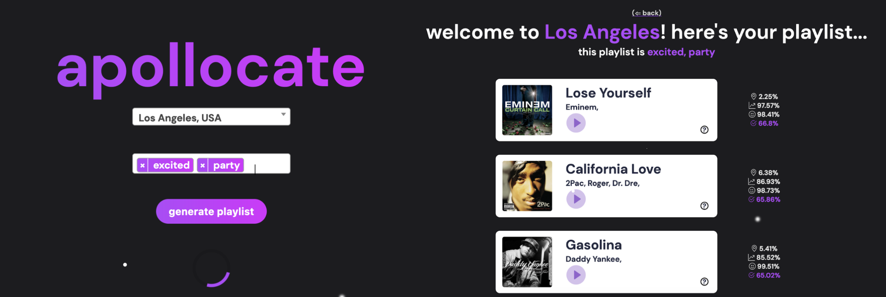
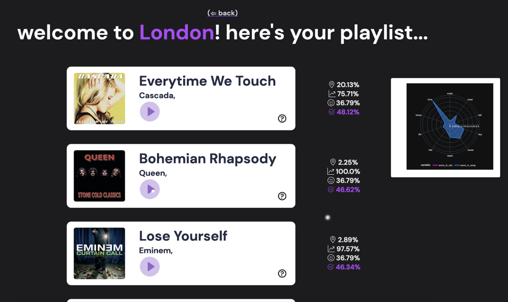

Description:
Our project will take two inputs from a user—the location they are visiting
(or trying to create a playlist about) and the moods and genres they would like represented
in the playlist. For example, the user might pick “New York City”, and select “happy” and
“excited” as their emotions, and receive a playlist including songs like “New York, New York”
and “Empire State of Mind”.
Next, our program will offer the user a few preliminary recommendations based on these
inputs, allowing the user to ‘rate’ these first few songs and further curate the final output
via Rocchio’s relevance feedback algorithm. Finally, the user will be presented with a
personalised playlist for them to enjoy.
Goal: To allow users to easily create custom playlists based on a certain mood
and/or physical location, perhaps one they are visiting or one that brings nostalgia.
The user can also receive personalised results by interacting with the application and teaching
the program what they like and dislike.

IR Aspect:
The IR component that we incorporated into was Wikipedia, song lyrics dataset,
and mood tag dataset. Parsed Wikipedia articles collected text data on the predetermined locations.
We utilized Wasabi dataset for mood tags of the songs and Genius lyrics dataset for lyrics and
popularity of the songs. Cosine similarity scores (one of the three factors of the total score)
was computed between songs and locations based on the topic weights. Compared to the last input,
we also added more location input values and changed mood tag sliders into drop down to incorporate
more mood tags.
From the Wasabi dataset, we truncated and consolidated the mood tags of the songs using SVD.
The SI aspect of the project relied on connecting lyrical components found in songs to topics
associated with cities via Wikipedia articles. We were able to scrape the page of Wikipedia
that corresponds to certain locations and extract common themes that will resonate with a
song and the location.
SI Aspect:
This project relies on connecting lyrical components found in songs to
topics associated with cities via wikipedia articles. We hope to be able to extract common
themes from songs and locations via these data sources to connect users with adequate songs
for their mood and location. The Rocchio method for user feedback is also an SI component,
as we are incorporating user-specific information to improve the final recommendations.
